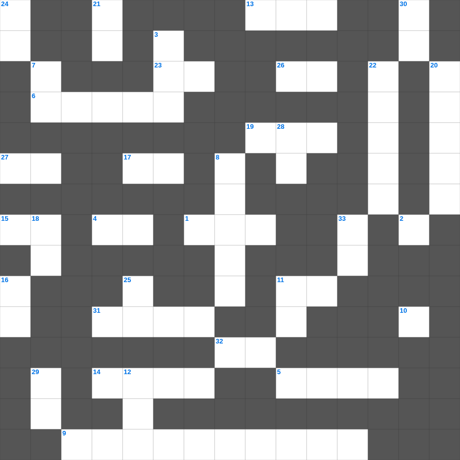

갈라디아서 마스터 100 (2/2)
📌 서비스 정의
십자가로세로는 교회 주보와 주일학교에서 사용할 수 있는 성경 기반 가로세로 퍼즐 서비스입니다. 성경 인물, 사건, 핵심 구절을 바탕으로 제작되었습니다. 온라인 풀이 및 인쇄 기능을 제공합니다.
📖 갈라디아서란?
갈라디아서는 율법주의에 빠지려는 갈라디아 교회를 향해, 오직 믿음으로 얻는 구원과 그리스도인의 자유를 강하게 변호한 바울의 서신입니다.
📚 갈라디아서의 주요 사건·주제
바울의 사도권 변호 · 오직 믿음으로 의롭다 함 · 율법과 약속의 관계 설명 · 그리스도인의 자유 선언 · 성령의 아홉 가지 열매
갈라디아서의 말씀을 퀴즈로 배우는 갈라디아서 성경공부 자료입니다. 가로 힌트와 세로 힌트를 보고 35개의 단어를 맞춰보세요. 인쇄도 가능하고 정답 확인도 바로 되니 소그룹 모임이나 가정 예배 시간에도 활용하실 수 있습니다.

📝 가로 힌트
1. 여리고 성을 재건하는 자에게 내린 저주 '터 닦을 때 이것을 잃음'
4. 이사야를 부르실 때 제단 숯불로 정결하게 한 신체 부위
5. 예레미야가 하나님의 말씀을 전하다가 갇혔던 곳
6. 바울의 육체의 가시를 부르는 또 다른 이름
9. 에스겔의 이름 뜻
9. 누가복음 족보의 특징: 아브라함 위로 올라가 결국 누구까지 이르는가
10. 그 열매는 먹을 만하고 그 잎사귀는 이것 재료가 되리라
11. 너는 진리의 말씀을 옳게 분별하며 부끄러울 것이 없는 이것으로 인정된 자로 자신을 하나님 앞에 드리기를 힘쓰라
13. 바울과 함께 갇힌 에바브라의 소속 교회 (골로새서 참고)
14. 너희는 자유의 율법대로 심판 받을 자처럼 말도 하고 이것도 하라
15. 두세 사람이 내 이름으로 모인 곳에는 나도 그들 이것에 있느니라
17. 소돔과 고모라와 그 이웃 도시들도 그들과 같은 행동으로 음란하며 다른 이것을 따라 가다가
19. 예수 그리스도를 죽은 자 가운데서 부활하게 하심으로 말미암아 우리를 거듭나게 하사 이것이 있게 하시며
23. 하나님의 각종 이것을 교회를 통하여 하늘에 있는 통치자들과 권세들에게 알게 하려 하심이니
26. 보라 농부가 땅에서 나는 귀한 열매를 바라고 길이 참아 이른 비와 이것 비를 기다리나니
27. 아이 성 왕을 매단 곳
31. 예수께서 제자들과 함께 이곳이라 하는 곳에 이르러 기도하기를 시작하시니
32. 너희 안에 이 마음을 품으라 곧 그리스도 예수의 이것니
📝 세로 힌트
2. 그는 모든 일에 우리와 똑같이 시험을 받으신 이로되 이것은 없으시니라
3. 그들은 패역한 족속이라 그들이 듣든지 아니 듣든지 그들 가운데에 이것이 있음을 알지니라
7. 디모데전서 2장에서 모든 사람을 위해 하라고 권면한 네 가지: 간구, 기도, 도고, 이것
8. 애가에서 묘사된 굶주린 대상들
11. 네 백성과 네 거룩한 성을 위하여 이것 이레를 기한으로 정하였나니
12. 요한복음 1:1에 나타난 예수님의 신성: 말씀은 곧 이것이시니라
16. 제비 뽑아 땅을 분배한 장소 (회막이 세워진 곳)
18. 도리어 사랑으로써 이것하노라 나이가 많은 나 바울은 지금 또 예수 그리스도를 위하여 갇힌 자 되어
20. 압살롬이 전사할 때 머리카락이 걸린 나무
21. 노인의 얼굴을 공경하며 일어서야 하는 대상
22. 바울이 감옥에 있을 때 자주 격려해주고 사슬을 부끄러워하지 않은 인물
24. 너는 또 왼쪽으로 누워 이스라엘 족속의 죄악을 짊어지되 네가 눕는 이것 수대로 그 죄악을 담당할지니라
25. 하나님이 아브라함에게 약속하실 때에 가리켜 맹세할 자가 자기보다 더 큰 이가 없으므로 자기를 가리켜 이것하셨나
28. 너희 말을 항상 은혜 가운데서 이것으로 맛을 냄과 같이 하라
29. 그리스도 예수의 사람들은 육체와 함께 그 정욕과 이것을 십자가에 못 박았느니라
30. 인구 조사 대상 '이십 세 이상으로 이것에 나갈 만한 자'
33. 남편들아 이와 같이 지식을 따라 너희 아내와 동거하고 그를 더 연약한 이것요 또 생명의 은혜를 함께 이어받을 자로 알아 귀히 여기라
🧩 이 퍼즐에서 배우는 내용
이 퍼즐은 갈라디아서 마스터 100 (2/2)의 핵심 단어와 개념을 자연스럽게 복습할 수 있도록 구성되었습니다. 주일학교 수업이나 개인 성경공부에서 학습 내용을 점검하는 용도로 바로 활용할 수 있습니다.
🧑🏫 교회 교육 자료 활용
이 퍼즐은 주일학교 교재 추천 자료로 활용할 수 있고, 주일학교 주보에 넣기 좋은 분량으로 구성되어 있습니다. 수업용 주일학교 교안에 활동지로 붙이거나, 예배 후 복습용 주일학교 공과교재로 바로 사용할 수 있습니다.
🏷️ 키워드
갈라디아서 성경공부 자료, 갈라디아서, 십자가로세로, 성경퀴즈, 말씀퀴즈, 가로세로퍼즐, 주일학교 교재 추천, 주일학교 주보, 주일학교 교안, 주일학교 공과교재